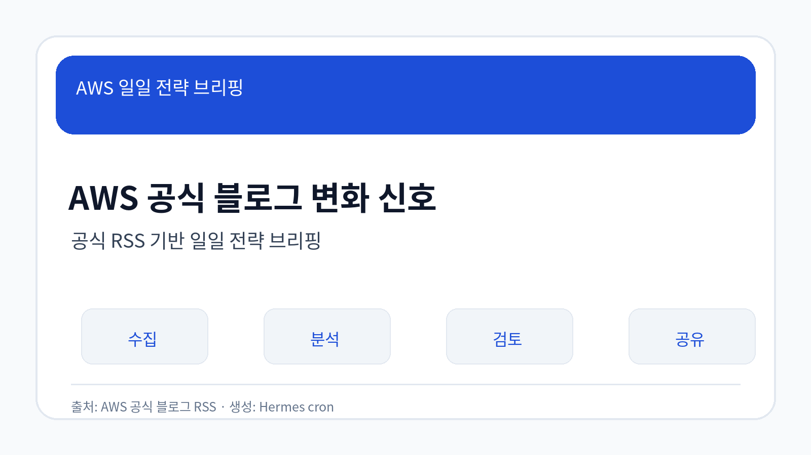
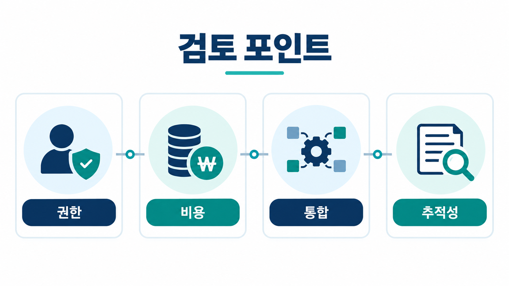
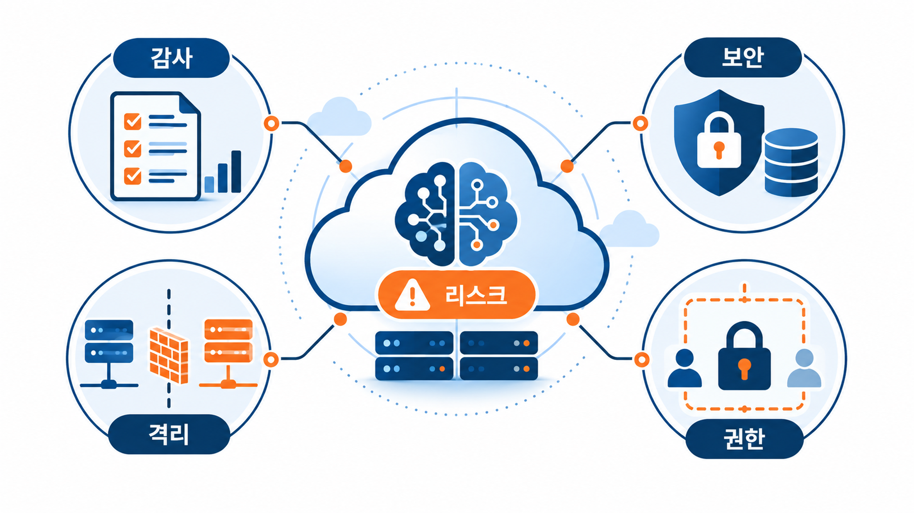

Amazon Bedrock AgentCore로 대화형 MCP 앱 구축
출처: AWS source-summary · 게시: 2026-09-12 · 분류: AI/ML
AgentCore와 MCP를 연결해 대화형 애플리케이션을 구성하는 개발 패턴을 설명합니다.
MCP 기반 확장은 도구 연결 범위가 넓어지는 만큼 인증, 권한, 호출 추적, 장애 격리 기준을 먼저 정해야 합니다.
원문 출처 열기AWS 공식 블로그 기반 일일 브리핑
신규 저장 항목이 없어 최근 검증된 AWS source-summary 기반 보조 분석입니다. 최신성은 확인 필요입니다. 화면 문장은 한국어로 작성하고, 제품·서비스명과 원문 URL은 원문 표기를 유지했습니다.

공식 RSS 3개를 확인했으며, 이번 리포트는 수집·검증된 원문에서 관찰된 사실만 바탕으로 작성했습니다. 확인이 필요한 판단은 단정하지 않았습니다.
선정 글에서 Agent, 모델 평가, 개인정보 탐지, 산업 데이터 분석이 함께 관찰됩니다.
기능 소개보다 권한, 추적성, 데이터 품질, 비용 영향까지 함께 검토해야 하는 주제가 늘고 있습니다.
조직은 원문 기능의 유용성과 함께 내부 보안 기준, 감사 가능성, 기존 시스템 통합 조건을 확인해야 합니다.

출처: AWS source-summary · 게시: 2026-09-12 · 분류: AI/ML
AgentCore와 MCP를 연결해 대화형 애플리케이션을 구성하는 개발 패턴을 설명합니다.
MCP 기반 확장은 도구 연결 범위가 넓어지는 만큼 인증, 권한, 호출 추적, 장애 격리 기준을 먼저 정해야 합니다.
원문 출처 열기출처: AWS source-summary · 게시: 2026-09-12 · 분류: Data/Analytics
임상 유전체 분석 파이프라인에서 AWS HealthOmics를 활용한 자동화와 처리 효율을 다룹니다.
의료·바이오 데이터는 분석 속도와 함께 재현성, 접근 통제, 규정 준수 검토가 의사결정 조건입니다.
원문 출처 열기출처: AWS source-summary · 게시: 2026-09-12 · 분류: AI/ML
특정 모델에 묶이지 않고 개인정보 탐지를 구성하려는 보안·데이터 거버넌스 패턴입니다.
개인정보 탐지는 모델 성능뿐 아니라 감사 로그, 오탐·미탐 대응, 지역별 규정 적합성 확인이 필요합니다.
원문 출처 열기출처: AWS source-summary · 게시: 2026-09-12 · 분류: Cloud
원문은 AWS 서비스·사례·기능 변경을 다루며, 적용 전 권한·비용·데이터 경계를 함께 확인해야 합니다.
관찰된 기능 또는 사례가 내부 보안 기준, 비용 관리, 기존 시스템 통합 조건과 맞는지 검토할 필요가 있습니다.
원문 출처 열기출처: AWS source-summary · 게시: 2026-09-12 · 분류: AI/ML
AvioBook 사례는 항공 현장의 전환 시간 분석에 생성형 AI와 AgentCore를 적용하는 흐름을 보여줍니다.
현장 프로세스 데이터가 많은 산업은 업무 맥락·권한·결과 검증 절차를 함께 설계해야 효과를 판단할 수 있습니다.
원문 출처 열기| 기사 | 게시 | 카테고리 |
|---|---|---|
| Amazon Bedrock AgentCore로 대화형 MCP 앱 구축 | 2026-09-12 | AI/ML |
| 이노크라스의 AWS HealthOmics 기반 임상 유전체 파이프라인 운영 효율화 방안 | 2026-09-12 | Data/Analytics |
| LLM 기반 모델 비의존형 PII 탐지 패턴 | 2026-09-12 | AI/ML |
| 멀티턴 대화를 위한 에이전트 평가 지표 설계 | 2026-09-12 | Cloud |
| AvioBook의 Amazon Bedrock AgentCore 기반 항공 턴어라운드 인사이트 사례 | 2026-09-12 | AI/ML |

| 관찰된 사실 | 근거 출처 URL | 기업 의사결정 시사점/리스크/기회 |
|---|---|---|
| AgentCore와 MCP를 연결해 대화형 애플리케이션을 구성하는 개발 패턴을 설명합니다. | 근거 출처 | MCP 기반 확장은 도구 연결 범위가 넓어지는 만큼 인증, 권한, 호출 추적, 장애 격리 기준을 먼저 정해야 합니다. |
| 임상 유전체 분석 파이프라인에서 AWS HealthOmics를 활용한 자동화와 처리 효율을 다룹니다. | 근거 출처 | 의료·바이오 데이터는 분석 속도와 함께 재현성, 접근 통제, 규정 준수 검토가 의사결정 조건입니다. |
| 특정 모델에 묶이지 않고 개인정보 탐지를 구성하려는 보안·데이터 거버넌스 패턴입니다. | 근거 출처 | 개인정보 탐지는 모델 성능뿐 아니라 감사 로그, 오탐·미탐 대응, 지역별 규정 적합성 확인이 필요합니다. |
| 원문은 AWS 서비스·사례·기능 변경을 다루며, 적용 전 권한·비용·데이터 경계를 함께 확인해야 합니다. | 근거 출처 | 관찰된 기능 또는 사례가 내부 보안 기준, 비용 관리, 기존 시스템 통합 조건과 맞는지 검토할 필요가 있습니다. |
| AvioBook 사례는 항공 현장의 전환 시간 분석에 생성형 AI와 AgentCore를 적용하는 흐름을 보여줍니다. | 근거 출처 | 현장 프로세스 데이터가 많은 산업은 업무 맥락·권한·결과 검증 절차를 함께 설계해야 효과를 판단할 수 있습니다. |
자동화·Agent·분석 기능을 적용할 때는 데이터 접근 권한, 호출 기록, 결과 검증, 비용 한도, 장애 격리 기준을 원문 기능 검토와 같은 수준으로 확인해야 합니다.
AWS 공식 블로그 변화 신호 - 공식 RSS 기반 일일 전략 브리핑
기업 적용 검토 포인트 - 데이터·권한·비용·통합 조건을 함께 확인
리스크와 거버넌스 체크 - 추적성·감사·보안 기준을 먼저 점검